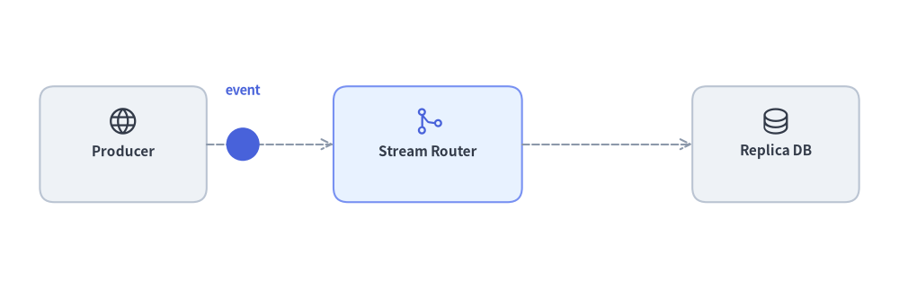
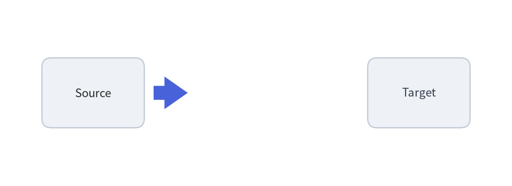
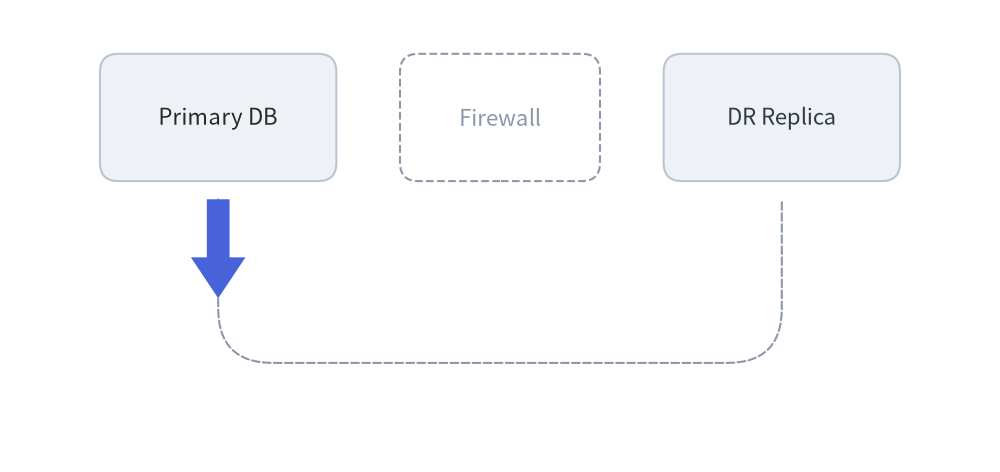
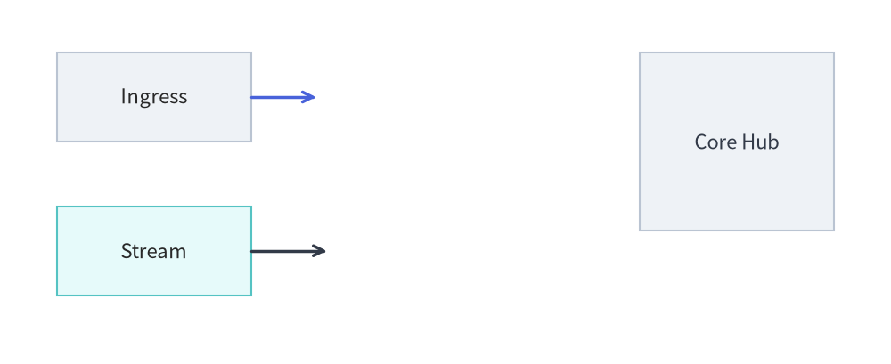
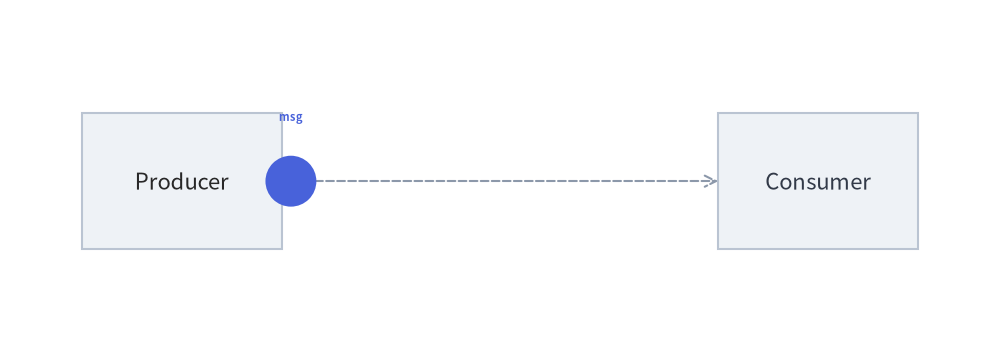
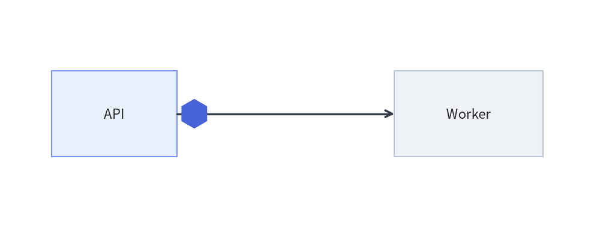

Animating Primitives & Color Transitions
Low-level drawing primitives (drawlib.shapes, drawlib.lines, drawlib.text, drawlib.icons) are stateless functions that draw directly onto the canvas. To animate them, use Pattern A (In-Frame Build) with clear=True (the default of with anim.frame():), computing per-frame coordinates, sizes, or styles inside a loop.

Source Code
from drawlib.anim import Animation
from drawlib.canvas import save, setup
from drawlib.icons import phosphor
from drawlib.lines import line
from drawlib.math import get_intermediate_points
from drawlib.shapes import arrow, circle, rectangle
from drawlib.styles import Colors, Styles, get_intermediate_colors
from drawlib.text import text
setup(width=124, height=40)
anim = Animation(fps=10.0)
pkt_points = get_intermediate_points((33.5, 20), (43.5, 20), num=3, include_ends=True)
arrow_tips = [*get_intermediate_points((73, 20), (93, 20), num=3), (93, 20)]
fade_colors = get_intermediate_colors(Colors.White, Colors.Primary, num=3, include_ends=True)
scales = [1.0, 1.05, 1.10, 1.05, 1.0]
# Phase 1: Packet travels from Producer to Router
for pkt_xy in pkt_points:
with anim.frame(duration=0.11):
rectangle((17, 20), width=23, height=16, style=Styles.Neutral.patch(shape_r=2.0), text="\nProducer", text_style=Styles.DarkBold.patch(text_size=11.0))
phosphor.globe((17, 23.2), width=4.4, style=Styles.Dark)
rectangle((59, 20), width=26, height=16, style=Styles.PrimaryNeutral.patch(shape_r=2.0), text="\nStream Router", text_style=Styles.DarkBold.patch(text_size=11.0))
phosphor.git_merge((59, 23.2), width=4.4, style=Styles.Primary)
rectangle((107, 20), width=23, height=16, style=Styles.Neutral.patch(shape_r=2.0), text="\nReplica DB", text_style=Styles.DarkBold.patch(text_size=11.0))
phosphor.database((107, 23.2), width=4.4, style=Styles.Dark)
line((28.5, 20), (46, 20), style=Styles.MutedDashed, arrow_head="->")
line((72, 20), (95.5, 20), style=Styles.MutedDashed, arrow_head="->")
circle(pkt_xy, radius=2.3, style=Styles.PrimaryFlat)
text((pkt_xy[0], 27.5), "event", style=Styles.PrimaryBold.patch(text_size=10.5))
# Phase 2: Block arrow grows from Router to Replica DB
for tip_xy in arrow_tips:
with anim.frame(duration=0.11):
rectangle((17, 20), width=23, height=16, style=Styles.Neutral.patch(shape_r=2.0), text="\nProducer", text_style=Styles.DarkBold.patch(text_size=11.0))
phosphor.globe((17, 23.2), width=4.4, style=Styles.Dark)
rectangle((59, 20), width=26, height=16, style=Styles.PrimaryNeutral.patch(shape_r=2.0), text="\nStream Router", text_style=Styles.DarkBold.patch(text_size=11.0))
phosphor.git_merge((59, 23.2), width=4.4, style=Styles.Primary)
rectangle((107, 20), width=23, height=16, style=Styles.Neutral.patch(shape_r=2.0), text="\nReplica DB", text_style=Styles.DarkBold.patch(text_size=11.0))
phosphor.database((107, 23.2), width=4.4, style=Styles.Dark)
line((28.5, 20), (46, 20), style=Styles.DarkBold, arrow_head="->")
arrow((73, 20), tip_xy, tail_width=2.6, head_width=6.0, head_length=4.5, style=Styles.PrimaryFlat)
# Phase 3: Replica DB scales and smoothly fades into Primary active state
for i, (bg, sc) in enumerate(zip(fade_colors, scales)):
is_last = (i == len(fade_colors) - 1)
with anim.frame(duration=2.0 if is_last else 0.12):
rectangle((17, 20), width=23, height=16, style=Styles.Neutral.patch(shape_r=2.0), text="\nProducer", text_style=Styles.DarkBold.patch(text_size=11.0))
phosphor.globe((17, 23.2), width=4.4, style=Styles.Dark)
rectangle((59, 20), width=26, height=16, style=Styles.PrimaryNeutral.patch(shape_r=2.0), text="\nStream Router", text_style=Styles.DarkBold.patch(text_size=11.0))
phosphor.git_merge((59, 23.2), width=4.4, style=Styles.Primary)
line((28.5, 20), (46, 20), style=Styles.DarkBold, arrow_head="->")
arrow((73, 20), (93, 20), tail_width=2.6, head_width=6.0, head_length=4.5, style=Styles.PrimaryFlat)
dst_style = Styles.PrimaryOutline.patch(shape_fill_color=bg, shape_r=2.0)
dst_text = (Styles.WhiteBold if i >= 2 else Styles.DarkBold).patch(text_size=11.0)
ic_style = Styles.White if i >= 2 else Styles.Dark
rectangle(
(107, 20),
width=23 * sc,
height=16 * sc,
style=dst_style,
text="\nReplica DB",
text_style=dst_text,
)
phosphor.database((107, 23.2), width=4.4 * sc, style=ic_style)
if is_last:
text((83, 28.0), "Synced", style=Styles.PrimaryBold.patch(text_size=10.5))
save()
1. Coordinate & Path Interpolation (get_intermediate_points & get_intermediate_paths)
To move shapes or progressively extend block arrows and polylines along straight segments or multi-point trajectories (such as L-shaped or U-shaped paths), use the pure coordinate and path interpolation helpers in drawlib.math:
from drawlib.math import (
get_intermediate_path_point,
get_intermediate_path_points,
get_intermediate_paths,
get_intermediate_point,
get_intermediate_points,
)
| Function | Signature | Description |
|---|---|---|
get_intermediate_point |
(xy1: Coordinate, xy2: Coordinate) -> tuple[float, float] |
Returns the single 50% midpoint (mx, my) between xy1 and xy2. |
get_intermediate_points |
(xy1: Coordinate, xy2: Coordinate, num: int = 1, *, include_ends: bool = False) -> list[tuple[float, float]] |
Returns num evenly spaced intermediate (x, y) points along the segment from xy1 to xy2. Set include_ends=True to return [xy1, ..., xy2] (num + 2 points total). |
get_intermediate_path_point |
(xys: Coordinates) -> tuple[float, float] |
Returns the coordinate at 50% of the total arc length along a multi-point polyline xys (e.g., the center of the bottom bar of a U-shaped path). |
get_intermediate_path_points |
(xys: Coordinates, num: int = 1, *, include_ends: bool = False) -> list[tuple[float, float]] |
Returns num evenly spaced (x, y) coordinates along the arc length of xys (or num + 2 points with include_ends=True). |
get_intermediate_paths |
(xys: Coordinates, num: int = 1, *, include_ends: bool = False) -> list[list[tuple[float, float]]] |
Returns num progressive prefix sub-paths [(x0, y0), ..., (xt, yt)] along xys (plus the complete path xys at the end when include_ends=True), ready to pass directly to lines(), lines_curved(), or arrow_polyline(). |
Animating a Growing Block Arrow (arrow)
By iterating over intermediate tip coordinates from start_xy to end_xy, you can smoothly grow a block arrow across frames:
from drawlib.anim import Animation
from drawlib.canvas import save, setup
from drawlib.math import get_intermediate_points
from drawlib.shapes import arrow, rectangle
from drawlib.styles import Styles
from drawlib.text import text
setup(width=110, height=40)
anim = Animation(fps=10.0)
start_xy = (33, 20)
end_xy = (77, 20)
tip_points = [*get_intermediate_points(start_xy, end_xy, num=5), end_xy]
for i, tip_xy in enumerate(tip_points):
is_last = (i == len(tip_points) - 1)
with anim.frame(duration=1.8 if is_last else 0.12):
rectangle((20, 20), width=22, height=15, style=Styles.Neutral.patch(shape_r=2), text="Source")
dst_style = Styles.PrimaryFlat if is_last else Styles.Neutral
dst_text = Styles.WhiteBold if is_last else Styles.Dark
rectangle((90, 20), width=22, height=15, style=dst_style.patch(shape_r=2), text="Target", text_style=dst_text)
arrow(
start_xy,
tip_xy,
tail_width=3.0,
head_width=7.0,
head_length=5.0,
style=Styles.PrimaryFlat,
)
if is_last:
text((55, 28), "Replicated", style=Styles.PrimaryBold.patch(text_size=10.5))
save()

Animating a Growing U-Shaped Polyline Arrow (get_intermediate_paths & get_intermediate_path_point)
For L-shaped or U-shaped routes, get_intermediate_paths(u_path, num=..., include_ends=True) generates progressive partial polylines that preserve all corners passed so far, while get_intermediate_path_point(u_path) computes the true midpoint along the trajectory:
from drawlib.anim import Animation
from drawlib.canvas import save, setup
from drawlib.lines import lines_curved
from drawlib.math import get_intermediate_path_point, get_intermediate_paths
from drawlib.shapes import arrow_polyline, rectangle
from drawlib.styles import Styles
from drawlib.text import text
setup(width=110, height=52)
anim = Animation(fps=12.0)
u_path = [(24, 30), (24, 12), (86, 12), (86, 30)]
mid_xy = get_intermediate_path_point(u_path)
sub_paths = get_intermediate_paths(u_path, num=8, include_ends=True)
for i, sub_xys in enumerate(sub_paths):
is_last = (i == len(sub_paths) - 1)
with anim.frame(duration=1.8 if is_last else 0.12):
# Guide track & service cards
lines_curved(u_path, r=6, style=Styles.MutedDashed)
rectangle((24, 39), width=26, height=14, style=Styles.Neutral.patch(shape_r=2), text="Primary DB")
rectangle((55, 39), width=22, height=14, style=Styles.MutedDashed.patch(shape_r=2), text="Firewall")
dst_style = Styles.PrimaryFlat if is_last else Styles.Neutral
dst_text = Styles.WhiteBold if is_last else Styles.Dark
rectangle((86, 39), width=26, height=14, style=dst_style.patch(shape_r=2), text="DR Replica", text_style=dst_text)
# Growing U-shaped arrow with rounded corners
arrow_polyline(
sub_xys,
tail_width=2.5,
head_width=6.0,
head_length=4.5,
style=Styles.PrimaryFlat.patch(shape_r=6),
)
if is_last:
text((mid_xy[0], mid_xy[1] + 5.5), "Bypass Tunnel", style=Styles.PrimaryBold.patch(text_size=10.5))
save()

Progressively Drawing Primitive Lines (line, lines, lines_curved)
The same interpolation functions apply directly to primitive line connectors in drawlib.lines:
- Straight
line(start_xy, tip_xy, arrow_head="->"): Iteratetip_xyover[*get_intermediate_points(start_xy, end_xy, num=5), end_xy]so the line and its"->"arrowhead extend smoothly toward the target. - Multi-segment
lines(sub_xys, arrow_head="->")orlines_curved(sub_xys, r=..., arrow_head="->"): Iteratesub_xysoverget_intermediate_paths(full_path, num=8, include_ends=True)to draw an orthogonal or rounded-corner connector progressively around bends:
from drawlib.anim import Animation
from drawlib.canvas import save, setup
from drawlib.lines import line, lines_curved
from drawlib.math import get_intermediate_paths, get_intermediate_points
from drawlib.shapes import rectangle
from drawlib.styles import Styles
setup(width=110, height=45)
anim = Animation(fps=12.0)
# 1. Straight line growing from (31, 33) to (79, 33)
straight_tips = get_intermediate_points((31, 33), (79, 33), num=5, include_ends=True)[1:]
# 2. Multi-segment curved line growing along an orthogonal Z-bend path
curved_path = [(31, 14), (55, 14), (55, 22), (79, 22)]
curved_subpaths = get_intermediate_paths(curved_path, num=5, include_ends=True)
for i, (tip_xy, sub_path) in enumerate(zip(straight_tips, curved_subpaths)):
is_last = (i == len(straight_tips) - 1)
with anim.frame(duration=2.0 if is_last else 0.1):
rectangle((19, 33), width=24, height=11, style=Styles.Neutral, text="Ingress")
rectangle((19, 14), width=24, height=11, style=Styles.SecondaryNeutral, text="Stream")
dst_style = Styles.PrimaryFlat if is_last else Styles.Neutral
dst_text = Styles.WhiteBold if is_last else Styles.Dark
rectangle((91, 27.5), width=24, height=22, style=dst_style, text="Core Hub", text_style=dst_text)
line((31, 33), tip_xy, arrow_head="->", style=Styles.PrimaryBold)
lines_curved(sub_path, r=4.0, arrow_head="->", style=Styles.DarkBold)
save()

Animating a Moving Packet Along a Line
from drawlib.anim import Animation
from drawlib.canvas import save, setup
from drawlib.lines import line
from drawlib.math import get_intermediate_points
from drawlib.shapes import circle, rectangle
from drawlib.styles import Styles
from drawlib.text import text
setup(width=110, height=40)
anim = Animation(fps=10.0)
pts = get_intermediate_points((32, 20), (77, 20), num=4, include_ends=True)
for i, pkt_xy in enumerate(pts):
is_last = (i == len(pts) - 1)
with anim.frame(duration=1.8 if is_last else 0.12):
# Static baseline endpoints
rectangle((20, 20), width=22, height=15, style=Styles.Neutral, text="Producer")
recv_style = Styles.PrimaryFlat if is_last else Styles.Neutral
recv_text = Styles.WhiteBold if is_last else Styles.Dark
rectangle((90, 20), width=22, height=15, style=recv_style, text="Consumer", text_style=recv_text)
# Wire and moving packet
line((31, 20), (79, 20), style=Styles.MutedDashed, arrow_head="->")
if not is_last:
circle(pkt_xy, radius=2.8, style=Styles.PrimaryFlat)
text((pkt_xy[0], 27), "msg", style=Styles.PrimaryBold.patch(text_size=10.5))
save()

2. Smooth Color Interpolation (get_intermediate_color & get_intermediate_colors)
When you want a shape's fill, border, or text color to transition smoothly from Color A to Color B across frames, use the color interpolation helpers in drawlib.styles (also available in drawlib.preset_colors):
from drawlib.styles import Colors, get_intermediate_color, get_intermediate_colors
| Function | Signature | Description |
|---|---|---|
get_intermediate_color |
(color1: ColorType, color2: ColorType) -> Color |
Returns the single 50% midpoint Color between color1 and color2 (wrapper around get_intermediate_colors(color1, color2, num=1)[0]). |
get_intermediate_colors |
(color1: ColorType, color2: ColorType, num: int = 1, *, include_ends: bool = False) -> list[Color] |
Returns num evenly spaced intermediate Color objects in RGBA space. Set include_ends=True to return [color1, ..., color2] (num + 2 colors total). |
Both functions accept any ColorType (Color instance, (R, G, B) / (R, G, B, A) tuple, or hex string like "#3B82F6").
Animating Style Fades with Style.patch()
Generate the color sequence once before the loop with include_ends=True, and apply each frame's color via .patch(shape_fill_color=bg):
from drawlib.anim import Animation
from drawlib.canvas import save, setup
from drawlib.shapes import rectangle
from drawlib.styles import Colors, Styles, get_intermediate_colors
setup(width=110, height=38)
anim = Animation(fps=10.0)
# Generate 7 colors from White -> Primary (including both endpoints)
fade_in = get_intermediate_colors(Colors.White, Colors.Primary, num=5, include_ends=True)
for i, bg_color in enumerate(fade_in):
is_last = (i == len(fade_in) - 1)
with anim.frame(duration=2.0 if is_last else 0.12):
# Static neutral peers
rectangle((22, 19), width=26, height=16, style=Styles.Neutral, text="Standby A")
rectangle((88, 19), width=26, height=16, style=Styles.Neutral, text="Standby B")
# Hero node smoothly fading from White to Primary
active_style = Styles.PrimaryOutline.patch(shape_fill_color=bg_color)
active_text = Styles.WhiteBold if i >= 3 else Styles.DarkBold
rectangle((55, 19), width=28, height=16, style=active_style, text="Leader Node", text_style=active_text)
save()

3. Combining Motion, Scaling, Rotation & Color Transitions
You can combine coordinate interpolation (get_intermediate_points()), dynamic geometric scaling (width, height, radius), rotation (Style.patch(angle=...)), and smooth color transitions (get_intermediate_colors()) in multi-phase animations—for example, moving and rotating a payload token across a link, and then pulsing (width/height scale) and fading the receiver node into its active state:
from drawlib.anim import Animation
from drawlib.canvas import save, setup
from drawlib.lines import line
from drawlib.shapes import rectangle, regularpolygon
from drawlib.styles import Colors, Styles, get_intermediate_colors
setup(width=105, height=40)
anim = Animation(fps=10.0)
packet_xs = [34, 44, 54, 64]
packet_angles = [0, 30, 60, 90]
packet_radii = [2.6, 3.0, 3.4, 3.0]
fade_colors = get_intermediate_colors(Colors.White, Colors.Primary, num=3, include_ends=True)
scale_factors = [1.0, 1.06, 1.12, 1.06, 1.0]
# Phase 1: Rotating & scaling hexagon token travels from API to Worker
for pkt_x, ang, rad in zip(packet_xs, packet_angles, packet_radii):
with anim.frame(duration=0.1):
rectangle((20, 20), width=22, height=15, style=Styles.PrimaryNeutral, text="API")
rectangle((82, 20), width=26, height=15, style=Styles.Neutral, text="Worker")
line((31, 20), (69, 20), style=Styles.DarkBold, arrow_head="->")
regularpolygon((pkt_x, 20), radius=rad, num_vertex=6, style=Styles.PrimaryFlat.patch(angle=ang))
# Phase 2: Worker pulses in scale (width/height) while smoothly transitioning from White to Primary
for i, (bg, s) in enumerate(zip(fade_colors, scale_factors)):
is_last = (i == len(fade_colors) - 1)
with anim.frame(duration=2.0 if is_last else 0.12):
rectangle((20, 20), width=22, height=15, style=Styles.PrimaryNeutral, text="API")
worker_style = Styles.PrimaryOutline.patch(shape_fill_color=bg)
worker_text = Styles.WhiteBold if i >= 2 else Styles.DarkBold
rectangle(
(82, 20),
width=26 * s,
height=15 * s,
style=worker_style,
text="Worker",
text_style=worker_text,
)
line((31, 20), (69, 20), style=Styles.DarkBold, arrow_head="->")
save()
